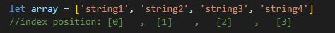
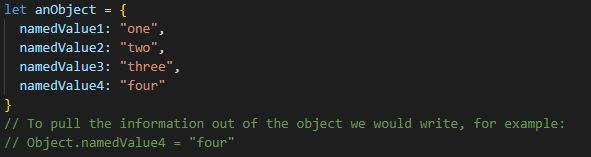
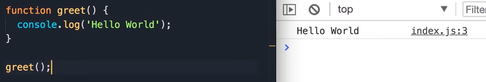
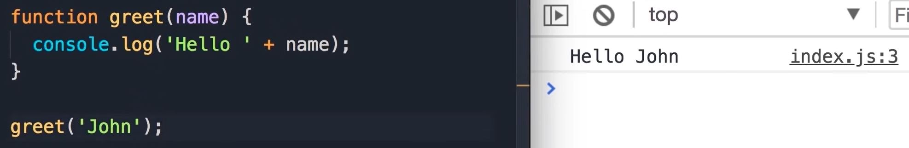

If HTML is the bare bones content of a web page, CSS is the skin and muscle defining the look of the content, and JavaScript is the nervous system making everything on the page function.

The DOM (Document Object Model) is a tree-like object representation of your HTML document. All the various components (elements, text content, comments etc) of your DOM (or the tree branchs) are known as nodes.
Every HTML element in a document has an object representation which allows us to access and modify the elements in JavaScript.
Arrays and Objects are methods of storing data in JavaScript. How you pull the data out of them differ.
Arrays can hold many values under one variable name, and can be pulled out based on its index position:

Objects similarly store data within the variable, but the data is stored as named values. If you think of it like a filepath, you access the variable first, and then the named value next:

Functions are a list of instructions that you give the computer - functions tell the computer what to do! Functions perform specific tasks, or calculates a value, when executed (or "called").

Functions can have arguments which change how the function behaves.
